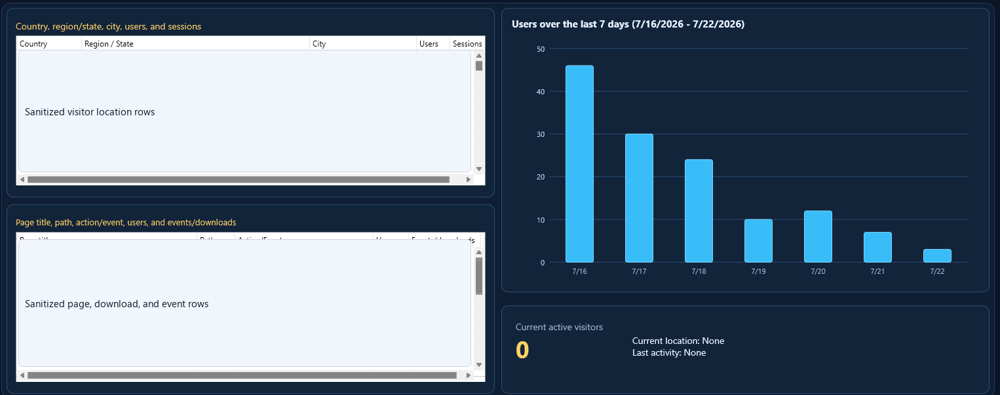

Overview

Website Analytics is a focused GA4 desktop dashboard. It retrieves selected data through GA4 APIs, keeps report rows in memory, and presents the information in practical panels instead of GA4's busier web interface.
- Use the dashboard to answer who visited, where they came from, what they used, how users changed over the selected range, and what is happening now.
- Report rows are memory-only and are discarded when the app closes.
- Settings and property definitions are stored locally.